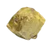
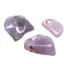

Correspondence Grimoire
Intuition

Grossularite
Holly Blue AgateIndigo GabbroIoliteIntuition is often called the "still small voice" or "gut feeling." It's the knowing that arrives before logic, the sense that something is true before you can explain why. For magickal practitioners, intuition is the bridge between the conscious mind and deeper wisdom.
Building Your Relationship with Intuition
The Craft Store Exercise
Walking through a craft store is a great exercise for building a relationship with your intuition, and it doesn't have to cost a lot of money. All you need to do is give yourself permission to step through the doors and walk around.
Grab a cart just in case something special catches your eye, but also because leaning on a cart gives way to strolling and taking your time as you peruse the aisles.
By having no preconceived notion of what you are looking for, you allow room for inspiration. Notice what draws your attention. What colors pull you in? What textures do you want to touch? What items make you pause? These are messages from your intuition.
Softening the Gaze
When watching something simple like bubbles floating through the air, allow your gaze to soften. Don't focus hard on any single thing. Let your vision become diffuse, receptive rather than searching.
You might be surprised by the connection to intuition or the recognition of inner knowing you experience. This soft-focus state opens channels that hard concentration closes.
The Portal of Your Eyes
You're not meditating or actively engaging in a spiritual process when you practice this. You're just looking through the portal of your eyes. It's amazing what you might perceive when you stop trying so hard to see.
Stare at the sky, at trees, at moving water. The sky is different every day. Sometimes cloudy, sometimes huge billowy clouds pass by, sometimes foggy. You're not looking with intention. You're allowing the moment to unfold and trusting what arrives.
Trusting What You Receive
Children know the power of trusting what they see and believing in things many may not understand. As we age, the world pressures us to give up our belief in things considered childish, illogical, or impractical.
But intuition operates outside logic. It speaks in feelings, images, sudden certainties. The more you trust it, the stronger it becomes. The more you dismiss it, the quieter it gets.
When you receive intuitive information:
- Notice it without immediately analyzing
- Give it space before deciding if it's "real"
- Track when your intuition proves accurate
- Forgive yourself when you misinterpret